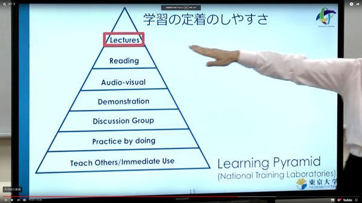

授業の目的と概要
物理的な設計において、そのものの品質を左右する素材について学ぶ。
設計にあたっての基準設定や生産方法の選択に応用可能な知識の習得を目指し、素材の特性とそれに対する加工法を両側面から学習することで、その素材の持つポテンシャルを実践の中から発見する方法を習得する。
到達目標
物理的な設計の基礎となる素材の特性を修得する。
加工方法について他者に説明ができる程度の知識を持つ。
演習内容
1st Sprint: 2018/5/10(thu)~5/16(wed)
加工工程実践（電動手工具等）
- 安全講習・工作基礎(ULTRA FACTORY)
- 素材の種類・材料加工実践・使い方マニュアル作成
- エレメンタリーワークショップの設計
ウルトラファクトリーとは？
全学共通工房です
gitbook
スライド
参考資料
2nd Sprint: 2018/5/31(thu)~6/6(wed)
加工工程実践（デジタルファブリケーション）
- 機械・ソフトウェアの種類・加工データ製作プロセス
- テストデータ作成・材料加工実践・使い方マニュアル制作
- エレメンタリーワークショップの設計・相互学習

gitbook
スライド
3rd Sprint: 2018/7/12(thu)~7/25(wed)
素材研究
- 素材の特性
- フィールドリサーチ（身の回りの素材）・計測・デジタル化
- 特徴、性質、価格、流通の分類・データベース化
gitbook
スライド